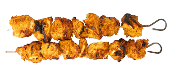
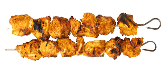

Kebabs
Chinese food lovers you can get more delicious food here thamn chinaThe word “kebab” is Turkish for “grilled meat.” The most familiar form of kebab for many people is the shish kebab, made with meat which is cut into chunks and lightly seasoned before being skewered. Many people also like to add vegetable chunks to their shish kebabs, such as onions, peppers, squash, and mushrooms. It is also possible to find kebabs made with long strips of meat, along with doner kebabs, made by grinding meat, forming it into a cylinder around a skewer, and slow-roasting it. In India, people eat kathi kebab, a form of kebab cooked in a tandoor oven.
- Chicken Kebab 350 RS.
- Beef Kebab 400 RS.
- Seekh Kebab 450 RS.
- Gola Kebab 300 RS.
- Reshmi Kebab 250 RS.
- Chapli Kebab 250 RS.
- Shami Kebab 150 RS.
 
